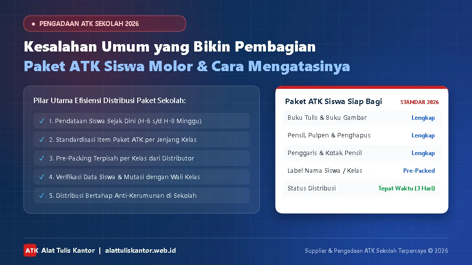
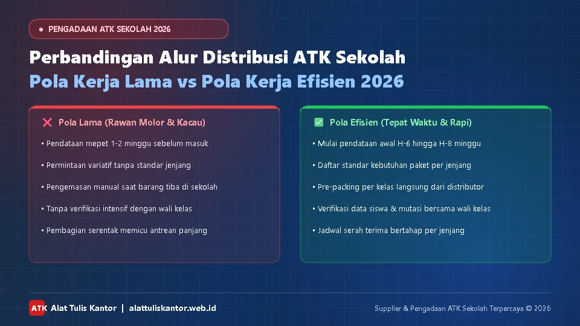

Pengantar Pembagian Paket ATK Siswa di Tahun Ajaran Baru
Pembagian paket ATK siswa yang lama dan melelahkan setiap menjelang tahun ajaran baru sering kali bukan disebabkan oleh volume pekerjaan yang memang besar, melainkan oleh kesalahan-kesalahan berulang dalam proses perencanaan dan pelaksanaan yang sebenarnya dapat dihindari. Banyak pihak tata usaha sekolah, panitia penerimaan siswa baru, maupun pengurus koperasi sekolah terjebak dalam pola kerja yang sama setiap tahun tanpa mengevaluasi akar masalah yang membuat proses ini selalu terasa menguras tenaga dan waktu.
Dalam ekosistem pengadaan ATK sekolah modern, kelancaran distribusi paket belajar siswa di awal semester menjadi cerminan profesionalisme manajemen institusi pendidikan di mata orang tua murid. Ketika paket buku, alat tulis, dan perlengkapan gambar terlambat dibagikan atau tertukar antar kelas, proses belajar-mengajar di hari-hari pertama sekolah menjadi terganggu.
Artikel ini mengulas secara mendalam kesalahan umum yang membuat distribusi paket ATK siswa sering mengalami hambatan, sekaligus cara praktis menghindarinya agar proses pengadaan dan pembagian paket sekolah menjadi jauh lebih efisien di tahun ajaran berikutnya. ATK Prima Distribusi siap membantu sekolah menyusun sistem distribusi yang lebih baik melalui WhatsApp di 0889-8964-3555.
Fakta Operasional Sekolah: Lebih dari 70% keterlambatan pembagian paket ATK siswa di hari pertama masuk sekolah dipicu oleh keterlambatan pengumpulan data riil siswa dan proses penyortiran barang yang masih dikerjakan manual satu per satu di ruang guru.
Ringkasan Kesalahan Umum Pembagian Paket ATK Siswa
Lima kesalahan umum yang paling sering membuat pembagian paket ATK siswa molor adalah:
- Pendataan jumlah siswa yang dilakukan terlalu mepet dengan hari pertama masuk sekolah.
- Tidak ada standar daftar kebutuhan ATK per jenjang yang seragam dan baku.
- Pengemasan dilakukan secara manual di sekolah tanpa sistem pre-packing per kelas dari distributor.
- Tidak melibatkan wali kelas dalam proses verifikasi jumlah siswa aktif dan siswa mutasi.
- Tidak ada jadwal distribusi bertahap yang terstruktur ke setiap jenjang kelas.
Menghindari kelima kesalahan ini dapat memangkas waktu persiapan pembagian ATK secara signifikan dibanding pola kerja manual yang biasa dilakukan sekolah setiap tahun, sekaligus mencegah anggaran ATK sekolah membengkak.
Mengapa Kesalahan yang Sama Sering Terulang Setiap Tahun
Banyak sekolah tidak melakukan evaluasi pasca pembagian ATK setiap tahun ajaran, sehingga kendala operasional yang sama terus berulang tanpa adanya perbaikan sistematis. Ketika tahun ajaran baru berakhir, panitia cenderung langsung fokus pada agenda akademik berikutnya tanpa mendokumentasikan hambatan logistik yang dialami.
Selain itu, proses pembagian yang biasanya dikerjakan oleh tim kepanitiaan yang berbeda-beda setiap tahun (akibat rotasi tugas guru atau pergantian pengurus koperasi) membuat pembelajaran dari pengalaman sebelumnya tidak terdokumentasi dengan baik. Akibatnya, setiap tahun ajaran baru panitia seolah memulai perencanaan dari nol kembali tanpa pedoman kerja baku.
5 Kesalahan Umum dan Cara Menghindarinya
1. Pendataan Jumlah Siswa Terlalu Mepet
Banyak sekolah baru mulai mendata jumlah siswa per kelas sekitar 1-2 minggu sebelum hari pertama masuk sekolah, padahal proses pemesanan, produksi kustom (seperti buku bersampul logo sekolah), dan pengemasan ATK membutuhkan waktu lebih lama dari itu. Solusinya: Mulai pendataan minimal 6-8 minggu sebelumnya, termasuk membuat proyeksi kuota siswa baru dari hasil PPDB yang biasanya sudah dapat diperkirakan lebih awal.
2. Tidak Ada Standar Daftar Kebutuhan per Jenjang
Tanpa daftar standar yang jelas, setiap wali kelas atau guru mata pelajaran mengajukan permintaan dengan variasi item yang berbeda-beda, membuat proses rekapitulasi dan pemesanan ke distributor menjadi sangat rumit. Solusinya: Susun daftar standar kebutuhan ATK per jenjang kelas sejak awal semester genap, sehingga proses pemesanan paket dapat dilakukan secara seragam, efisien, dan mendapatkan potongan harga grosir yang lebih tinggi.
3. Pengemasan Manual Tanpa Sistem per Kelas
Mengemas ATK dalam jumlah ribuan item secara curah (bulk) tanpa pengelompokan per kelas sejak awal membuat staf tata usaha harus menghitung ulang, memasukkan ke dalam kantong plastik, dan mengelompokkan barang saat hari pembagian tiba. Solusinya: Minta supplier atau distributor ATK resmi menyediakan layanan pre-packing terpisah per kelas lengkap dengan label nama atau nomor kelas, sehingga barang yang tiba di sekolah sudah langsung siap dibagikan ke ruang kelas masing-masing.

4. Tidak Melibatkan Wali Kelas dalam Verifikasi
Wali kelas memiliki data paling akurat mengenai jumlah siswa aktif di kelasnya, termasuk informasi siswa pindahan atau mutasi yang mungkin belum tercatat di data pusat tata usaha. Solusinya: Libatkan seluruh wali kelas dalam proses verifikasi daftar nama siswa sebelum pemesanan final (purchase order) diterbitkan ke vendor guna menghindari risiko kekurangan maupun kelebihan stok paket ATK.
5. Tidak Ada Jadwal Distribusi yang Terstruktur
Membagikan ATK secara serentak kepada seluruh jenjang di lapangan atau aula sekolah pada hari pertama masuk sering menyebabkan kerumunan, antrean panjang, dan kebingungan logistik. Solusinya: Susun jadwal serah terima bertahap per jenjang kelas (misalnya hari pertama khusus kelas 1 & 2, hari kedua kelas 3 & 4), atau distribusikan paket langsung ke meja murid masing-masing satu hari sebelum hari pertama sekolah dimulai.
Tabel Perbandingan: Pola Kerja Lama vs Pola Kerja yang Diperbaiki
| Aspek Evaluasi Distribusi | Pola Kerja Lama (Rawan Molor) | Pola Kerja yang Diperbaiki (Efisien) |
|---|---|---|
| Waktu Mulai Pendataan | 1-2 minggu sebelum masuk sekolah | 6-8 minggu sebelum masuk sekolah |
| Standar Kebutuhan ATK | Tidak ada, bervariasi per guru/kelas | Daftar standar baku per jenjang kelas |
| Metode Pengemasan | Manual saat barang tiba di sekolah | Pre-packing per kelas langsung dari distributor |
| Verifikasi Data Siswa | Hanya data TU tanpa konfirmasi wali kelas | Validasi silang aktif bersama wali kelas |
| Jadwal Distribusi | Serentak di hari pertama, memicu kerumunan | Bertahap per kelas dengan jadwal rapi |
| Estimasi Waktu Selesai | 10 – 14 hari kerja penuh stres | 2 – 3 hari kerja tuntas dan rapi |
Studi Kasus: Perbaikan Sistem di SD Kartika Bangsa
SD Kartika Bangsa di wilayah Jawa Barat sebelumnya membutuhkan waktu hampir dua minggu untuk menyelesaikan pembagian paket ATK kepada lebih dari 600 siswanya. Setiap tahun ajaran baru tiba, ruang guru penuh sesak oleh tumpukan kardus buku dan staf tata usaha kewalahan memilah pensil, penggaris, serta buku catatan secara manual hingga larut malam.
Setelah mengevaluasi dan memperbaiki kelima aspek mendasar di atas, khususnya memulai pendataan H-8 minggu sebelum PPDB ditutup dan bermitra dengan supplier yang menyediakan layanan pre-packing per kelas, SD Kartika Bangsa berhasil menyelesaikan seluruh proses serah terima paket ATK siswa hanya dalam tiga hari kerja tanpa ada komplain kekurangan item dari orang tua murid.
Manfaat Nyata Efisiensi: Penghematan lebih dari 40 jam kerja staf sekolah yang sebelumnya habis untuk membungkus paket manual, sehingga energi guru dapat terfokus sepenuhnya pada persiapan kurikulum pengajaran.
Langkah Praktis Menata Alur Logistik Paket ATK di Sekolah
Untuk memastikan proses pembagian berjalan tanpa hambatan, ikuti panduan alur kerja logistik berikut:
- Tetapkan Koordinator Tunggal: Tunjuk satu penanggung jawab dari bagian TU atau Koperasi untuk mengelola komunikasi satu pintu dengan pihak vendor ATK.
- Sediakan Buffer Stock 5-10%: Selalu siapkan cadangan paket tambahan sekitar 5% dari total siswa untuk mengantisipasi adanya siswa mutasi masuk di awal semester.
- Gunakan Checklist Tanda Terima: Sediakan lembar tanda terima per siswa yang ditandatangani saat paket diserahkan untuk keperluan audit akuntabilitas koperasi sekolah.
- Cek Kualitas Sampel Produk: Sebelum pengiriman massal, minta distributor mengirimkan 1 set sampel fisik paket per jenjang guna memastikan kualitas kertas dan tinta alat tulis sesuai spesifikasi kontrak.
Cara Memulai Perbaikan Sistem Distribusi ATK Sekolah Anda
Untuk mempelajari skema pengadaan ATK sekolah dengan layanan custom packaging dan pre-packing per jenjang, kunjungi panduan pengadaan ATK untuk sekolah dan kampus kami. Anda juga dapat meninjau katalog produk alat tulis lengkap di menu katalog produk ATK atau memilih paket bundling yang tersedia di paket ATK institusi.
Ketahui lebih lanjut profil legalitas, reputasi, dan komitmen layanan distribusi kami di halaman Tentang Kami sebelum mengajukan penawaran harga untuk tahun ajaran baru mendatang.
Pertanyaan yang Sering Diajukan (FAQ)
Kesimpulan
Pembagian paket ATK siswa yang lama dan melelahkan setiap tahun ajaran baru sebenarnya dapat dihindari dengan mengenali dan memperbaiki lima kesalahan umum yang sering terulang. Dengan pendataan lebih awal, standar kebutuhan yang jelas, sistem pre-packing dari distributor, keterlibatan aktif wali kelas, dan jadwal distribusi yang terstruktur, sekolah dapat menghemat waktu, tenaga, dan anggaran secara signifikan sekaligus memberikan pengalaman terbaik bagi siswa dan orang tua.